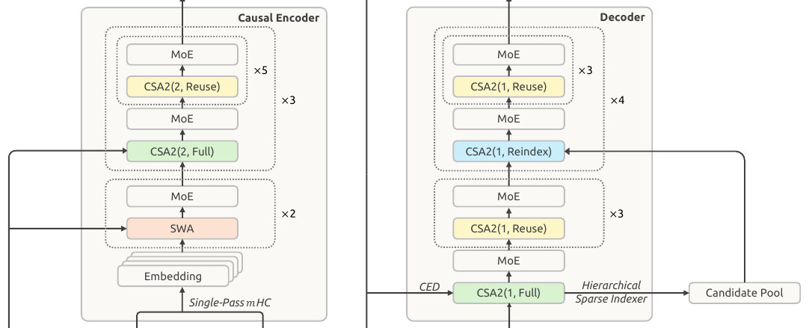
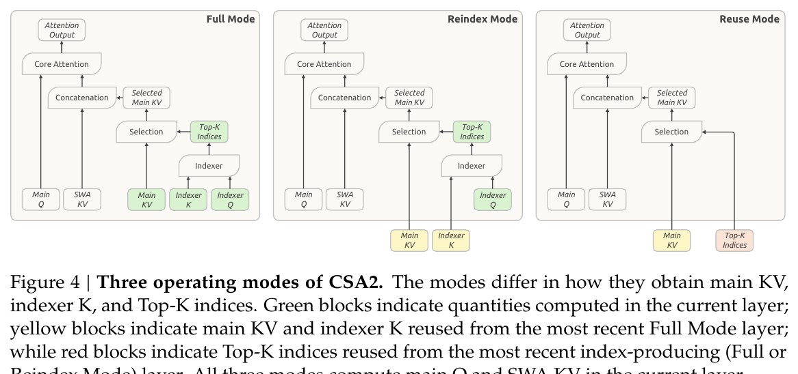
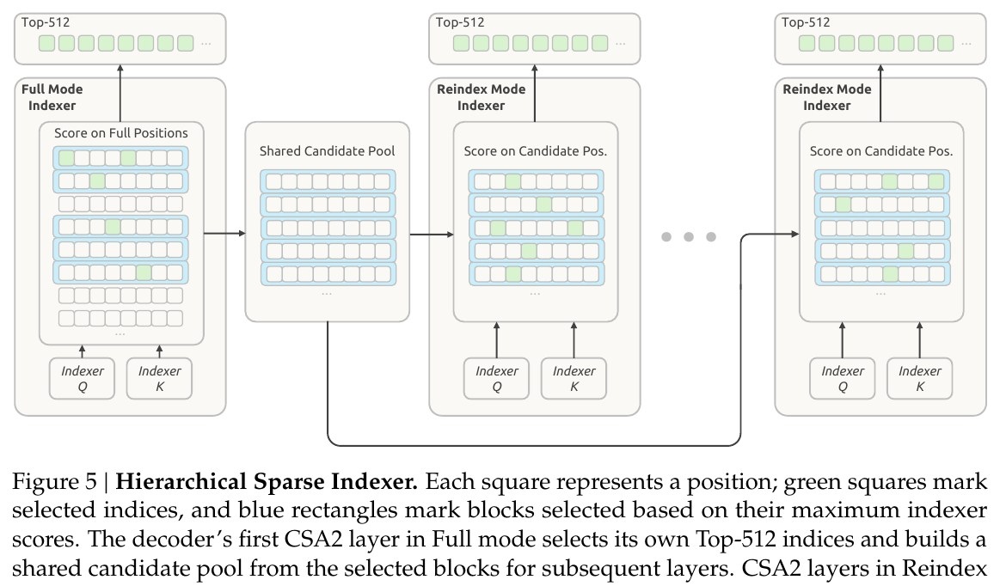
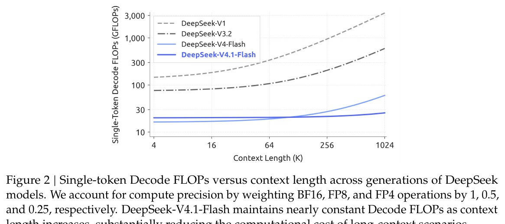
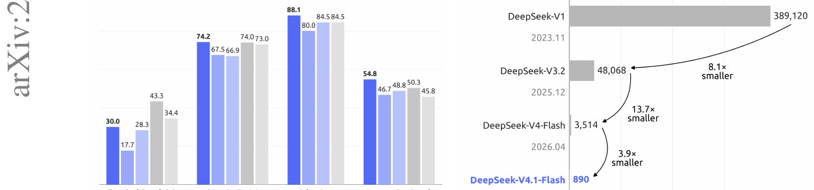

速览
比 V4-Flash 大（284B → 552B 骨干），但 KV 小 4 倍、prefill 激活更少。
五条要点
KV 三层压缩：层、精度、部署
CSA2 让多层共享同一份全局 KV 和 indexer K，主 KV 用 FP4 存，两者合起来把全局 KV 压到 890 B/token（V4-Flash 3,514）§1 · 图 1(b)。部署侧不再把 SWA KV 写进 SSD 持久缓存，miss 时只重放最近 nwin=128 个 token 近似重建，持久化 KV 降到约 1/8§3.2 · §4.2.1。
CED：prefill 只跑一半层
后 20 层（decoder）的全局 KV 直接由第 20 层隐状态投影得到，prefill 只需跑 encoder，计算从 O(NL) 降到约 O(NL/2)§2.2。于是 prefill 激活 8B、decode 激活 16B，照顾工具调用多、prefill 频繁的 Agent 场景§2.1。
多模态从预训练第一天加入
45T token 多模态语料，文本:多模态 = 7:1§4.1；稀疏注意力在 64K 序列上从头训，没有稠密 warm-up§1 · §4.2.2。ViT 先单独训：47B 对 alt-text 图文做 SigLIP 对比学习，再接 4B MoE LLM 在 236B token 上做自回归微调§4.2.2。
后训练：配方照旧，数据和环境是全部变量
SFT → RL → OPD，「没有超出既有做法的算法修改」§5.1；功夫花在任务合成、Agent 环境自动构建和百万级并发沙箱上§5.1.1 · §5.1.3。另加可控推理强度 b∈[1,100]，API 的 max / high / low 对应 100 / 75 / 50表 2。
常规 Agent 榜追平闭源，难题仍有差距
DeepSWE v1.1 74.2（Opus-5 74.0）、Terminal-Bench 2.1 90.6（89.1）、Codeforces 3471（V4-Pro 3348）表 3；但 Terminal-Bench 4.0 只有 31.2，Opus-5 是 51.8；三个视觉 Agent 基准都低于 Opus-5表 3。
读之前先知道
架构改动（CED、Bounded Replay、FP4、Single-Pass mHC）都只说「退化可忽略」，没有给消融数字；数据除 7:1 外没有配比；许可证未写；结论里出现了表 3 没有的对比模型（见 局限）。
架构：Causal Encoder-Decoder + 纯 CSA2
图文输入、文本自回归输出。语言骨干 40 层因果 Transformer，前 2 层只有 SWA，其余每层「全局注意力（CSA2）+ SWA」并行§2.1。

示意：逐层模式按 §4.2.1 的文字配置画出，与图 3 一致；Engram 层位按 §2.4.2（零起编号）。所有层都各自计算 Q 和 SWA KV§2.3.1。由此只有 4 层（encoder 3 层 + decoder 1 层）自产全局 KV，4 层 Reindex 重新打分，其余 30 层直接复用推算。虚线只示意「候选池由第一个 Full 层构建、供后续 Reindex 层使用」§2.3.2，不代表具体张量流。
3.1 相对 DeepSeek-V4-Flash 改了什么
| 部件 | V4-Flash | V4.1-Flash | 来源 |
|---|---|---|---|
| 规模 | 284B 骨干 / 13B 激活 | 552B 骨干 + 196B Engram / 8B（prefill）· 16B（decode） | 表 1 · §2.1 |
| 模态 | 文本 | 原生多模态（图像 + 文本输入），预训练第一天加入 | §2.1 · §4.3.2 |
| 层组织 | 每层自产 KV | CED：decoder 全局 KV 由第 L/2 层隐状态按层投影；SWA 仍逐层计算 | §2.2 式 (1) |
| 全局注意力 | CSA 与 HCA 混合 | 纯 CSA2：跨层共享主 KV / indexer K，可复用 Top-K；压缩器去掉 2m 重叠窗口和绝对位置编码；indexer K 由主 KV 投影得到 | §1 · §2.3 |
| decoder 索引 | — | Hierarchical Sparse Indexer：最多 2,048 块 × 8 位置 = 16,384 候选 | §2.3.2 · §4.2.1 |
| 主 KV 精度 | FP8 | FP4（E2M1 + 每 16 通道一个 E4M3 scale），SWA KV 仍 FP8 | §2.4.4 |
| mHC | 多 pass，三个 kernel | Single-Pass mHC + Mega-mHC kernel，激活读写减半 | §2.4.1 |
| 条件记忆 | — | Engram（去掉短因果卷积） | §2.4.2 |
| 多 token | MTP 与骨干联合预训练（V3 起） | 预训练不带 MTP；骨干训完后单独训 DSpark 做投机解码 | §2.1 · §2.4.3 |
| SWA 持久化 | SWA KV 约占持久缓存一半；精确重建需重放 L×nwin | SWA KV 移出持久缓存；Bounded Replay 只重放 nwin 个 token | §3.2.1 · §3.2.2 |
3.2 两张原图：CSA2 三种模式与分层索引


3.3 部件逐个看
CED：借 YOCO 的思路，SWA 不共享 §2.2
- 与 YOCO 的区别：每个 decoder 层用自己的投影权重，且 SWA 的 KV 仍按本层隐状态逐层算，增加局部 KV 的计算深度§2.2。
- 代价是 decoder 的 SWA KV 要额外重放 nwin×L/2 个 token；用 Decoder SWA Bounded Replay 只重放最后 nwin 个§2.2 · §3.2.2。
- 「与基线性能相当」只有文字，无对照数字。
CSA2：把「共享缓存」和「复用索引」拆开 §2.3
- KV 成本拆成三个可相乘的维度：条目大小（GQA / MLA）、序列维（每 m 个 token 压成一条）、层维（跨层复用）。作者认为已有方法都没同时覆盖三者§2.3。
- Full：自算主 KV、indexer Q，indexer K 由主 KV 投影，选新 Top-K。Reindex：复用 KV 与 indexer K，用自己的 indexer Q 重选。Reuse：KV 和 Top-K 都复用，不算 indexer§2.3.1。
- 配置：indexer 32 头 × 128 维；attention top-k = 512；64 个 query 头、头维 512、query 压缩维 1280；SWA 窗口 nwin = 128§4.2.1。
- Reuse 层推理只需 prefill 15 个 / decode 11 个 kernel§3.2。
Hierarchical Sparse Indexer §2.3.2
- 只用于 decoder。第一个 Full 层扫完整可见范围，再以块内最大分数选块；例：2,048 块 × 8 位置 = 16,384 候选§2.3.2。
- 候选池大小固定时，后续 indexer 每个 query 的打分量与上下文长度无关（线性 → 常数）。
- 训练感知：在后训练阶段引入，训练与推理用同样的候选限制§2.3.2。
FP4 主 KV：为什么可以不要全局 scale §2.4.4
- 格式：E2M1，每 16 通道一个 E4M3 scale，参考 NVFP4 但去掉二级全局 scale；可表示到 448 × 6 = 2688。
- 上界论证：RMSNorm 权重最大约 1，512 通道 latent 的 L2 范数至多约 √512，RoPE 保范数，单通道绝对值上界约 22.6；训练中实测最大约 10。
- 在 RoPE 之后量化（之前量化只有微小提升，还会增加解码开销）；后训练阶段做 QAT。相对 V4 的 FP8 主 KV，存储近乎减半。
- 索引侧沿用 V4 的 MXFP4 QAT（为跨硬件兼容，尽管别的格式在实验里更准）。
Single-Pass mHC §2.4.1
- 把输入混合系数整体后移一层：第 l 块用 Al−1 而不是 Al，去掉「等全维归约完才能混合」的依赖。
- 激活读写：V4 多 pass 实现 (4n+4)d，理论下界 (2n+2)d；Mega-mHC 达到下界，即减半。
- 预训练仍用多 kernel 实现，只在部署时融合；「性能退化可忽略」无数字。配置：扩展因子 4，Sinkhorn-Knopp 20 次§4.2.1。
Engram · DSpark · 视觉通路 §2.1.1 · §2.4.2 · §2.4.3
- Engram：196B 参数分两个模块，放在第 1、14 层；N-gram 阶 {2,3,4}，8 个哈希头，每阶嵌入总维 2048，每头约 16M 条表项（取不同素数）；表与 KV 投影用 FP8；推理时可从主存 RDMA 预取。
- DSpark：3 个 Transformer 块、128 token 滑窗，一次前向出 5 个草稿位置；置信度头 + 吞吐曲线动态决定验证长度。骨干冻结单独训一段，后训练中继续训但不回传梯度。
- 视觉：ViT 用 2D-RoPE、线性 patch embedding（兼容 Muon）、RMSNorm、SwiGLU；32 层、hidden 1024、16 头、patch 14；3×3 pixel-unshuffle 把视觉 token 减 9 倍，再经 2 层 MLP（hidden 5120）投影§4.2.1。1344×1344 输入约 96×96 = 9,216 个 patch → 1,024 个视觉 token推算。
- 多模态负载均衡：无辅助损失负载均衡对图像和文本各维护一套专家偏置，各自按本模态负载更新§2.1.1。

数据：清洗流程写得细，数量只给了几个
原文唯一的比例是「文本 : 多模态 = 7:1（按 token）」，下面只画这一条。其他子集都没有比例，用「已披露规模」表列出，未给的标明原文未披露。
4.1 唯一给出的配比
这是去重合并之后的配比：文本和多模态两条流水线分开处理，重叠样本用多模态版本替换纯文本版本，epoch 数取两者中较大者§4.1。45T × 1/8 ≈ 5.6T 多模态 token 推算（假设 7:1 指全部 45T，原文未明说）。
4.2 已披露规模一览
| 数据 | 已披露内容 | 规模 | 来源 |
|---|---|---|---|
| 预训练（语言骨干） | |||
| 总量 | 多模态语料，训练全程无不稳定 | 45T token | §4.2.2 |
| 文本 / 多模态 | 合并后按 token 计 | 7 : 1 | §4.1 |
| 文本子集 | 过滤低信息量的模型生成内容；新增新开源仓库、commit、库与框架代码 | 原文未披露 | §4.1 |
| 图文对 | 网页图片 + alt text，相关性阈值过滤，按图像语义去重 | 原文未披露 | §4.1 |
| 图文交错 | 主要来自网页与 PDF，分级过滤 + SmolVLM 严格打分 | 原文未披露 | §4.1 |
| 领域数据 | grounding / pointing、OCR、长尾知识；图像-代码对、computer-use 轨迹 | 原文未披露 | §4.1 |
| 打包 | 改进 best-fit packing；超长文档混合前确定性预切分 | padding 率 ≤ 10−4 | §4.1 |
| 视觉编码器（DeepSeek-ViT，单独训练） | |||
| 对比预训练 | SigLIP sigmoid 损失，alt-text 来源，最大 224×224（保比例缩小） | 约 47B 图文对 | §4.2.2 |
| 自回归微调 | 接 4B MoE LLM，图像 caption、alt text、图表、OCR；分辨率 544–1344 | 236B token | §4.2.2 |
| 后训练 | |||
| SFT 数据 | — | 原文未披露 | §5.1 |
| RL 任务 / 环境 | 通用 Agent、编码 Agent 两条生产线（见 4.4） | 任务数原文未披露；沙箱「数百万并发」 | §5.1.1 · §5.1.3 |
| OPD | 全词表 OPD，覆盖所有领域 | 超过 40 个教师模型 | §5.2.4 |
4.3 多模态与文本清洗流水线
caption 相关：预训练图文对用的是网页原生 alt text，正文没有提到给预训练图像重写 caption；只在 ViT 自回归微调阶段明确列出了「image captions」数据集§4.1 · §4.2.2。caption 由谁、用什么模型生成，原文未披露。
4.4 后训练数据：任务合成与环境自动构建
任务 = (问题, 环境, 验证系统) §5.1.1
- 质量看两维：难度（不平凡）与正确性（三件套无关键缺陷），二者作为奖励，迭代训练模型自己造任务。
- 全生命周期监控：任务每被一个新 RL run 使用，产生的轨迹就作为再审计证据。
- 流水线整体做严格过滤、去重和难度校准，保证质量与课程平衡§5.1。
通用 Agent：从真实工作流反推 §5.1.1
- 内部员工与外部伙伴自愿回传日常使用数据与反馈；据其中出现的接口构造大批 mock 工具，复刻输入格式、输出结构、API schema 与行为约束（SaaS、企业应用、业务后端）。
- 大规模收集员工提交的负反馈和失败案例，重建工具上下文与失败条件，生成单轮 / 多轮环境，对已观察到的弱点做定向 RL。
编码 Agent：多 Agent 协作造环境 §5.1.1
- 来源：员工与伙伴的编码 Agent 会话（只留高复杂度或模型表现差的任务，按轨迹去重）+ 过 star 数阈值的 GitHub 仓库。
- 流程：判断能否容器内构建运行并自动验证 → 选起点 commit、设计实现方向、写 fail-to-pass 与 pass-to-pass 评测点 → 另一 Agent 配依赖、写测试与描述、清除泄题痕迹、打包镜像层 → 多个 Agent 试做 → 独立质检 Agent 检查环境问题、事实错误、评测点与描述不一致、可 hack 风险 → 不过则修复 Agent 修正并调整过易 / 过难评测点，重新验证。
沙箱规模与防 hack §5.1.3
- DSec 支撑数百万并发沙箱；自研放置引擎换取最终一致性；sub-NUMA 绑定让单物理节点并发容器从约 1,000 提到 2,500 以上。
- RL 中观察到 Agent 利用 XFS 权限、AppArmor 非法内存访问、包镜像服务泄露答案等漏洞，或删除关键二进制、文件系统。用逐沙箱 AppArmor 与 eBPF 网络策略防护；环境被搞崩记为失败轨迹，并回报「repercussion」信号。
训练配方
预训练超参写得很全；后训练只给流程和机制，RL / OPD 的学习率、batch、组大小、k0、τ 等原文未披露。
5.1 预训练时间线（按 token）
示意：横轴按 token 线性；节点数值来自 §4.2.2，ViT 冻结 / 解冻时点（学习率衰减开始时）来自 §2.5。曲线形状为示意，warm-up 段宽度未按比例。batch 全程固定 1.006 亿 token§4.2.2。
优化器分工 §2.5 · §4.2.2
- Muon：骨干线性层、Engram 投影、VL 投影器；Q / K 权重用按头切分的 head-wise Muon。momentum 0.95、wd 0.1，更新 RMS 缩放到 0.18 以复用 AdamW 学习率。
- AdamW：RMSNorm 权重和其他非矩阵参数；β = (0.9, 0.95)，ε = 10−20，wd 0.1。
- Sinkhorn 平衡更新（新）：Engram 表、token embedding、预测头。Nesterov 动量后交替做行 / 列归一（K = 11 步，τ = 10−3），lr 乘 γ = 0.18 对齐 Adam；只需动量缓冲，「经验上优于 Adam」。
- Engram 学习率 ×5。
其他预训练设置 §4.2.2
- 负载均衡：图像、文本 token 的偏置更新速度都设为 0.001；另保留权重 0.0001 的序列级平衡损失。
- 样本级 attention mask（同 V4）。
- 训练序列最长 1M，预训练和后训练都有相当比例在超长序列上；图像按 CP rank 负载均衡分片，每张图只读一次§3.1.1。
- 训练基础设施：ViT 拆到 LLM 参数树外，每步分三段（ViT 前向 → LLM 前后向 → ViT 反向）；CSA2 跨流水线阶段共享靠 shadow indexer 与 payload 扩展§3.1。
5.2 从 ViT 到最终模型
ViT 对比预训练
- 损失
- SigLIP sigmoid
- 数据
- 约 47B 图文对
- 分辨率
- ≤ 224×224
高分辨率在这一阶段涨点明显，但对最终模型贡献很小，故不做§4.2.2。
ViT 自回归微调
- 接
- 4B MoE LLM
- 数据
- 236B token
- 分辨率
- 544–1344
caption、alt text、图表、OCR；结束后丢掉这个 LLM，只留 ViT§4.2.2。
骨干预训练
- 数据
- 45T token
- 序列
- 64K → 1M
- MTP
- 不带
多模态数据从第一天起混入；分辨率策略与 ViT 阶段一致§2.1 · §4.2.2。
DSpark 单独训练
- 骨干
- 冻结
- 草稿
- 5 位置
后训练中继续随策略更新，但不向骨干回传梯度，用于加速线上服务和 RL / OPD rollout§2.4.3。
标准三段，无算法改动
- RL 在合成任务上大规模异步进行，按训练算力和 scaffold 数两个维度扩展§5.1.2。
- 跨 scaffold 训练：Agent sandbox 跑 scaffold 与工具，worker 容器把异构交互归一为统一轨迹格式。
- 用 model merging 重新初始化后续 RL run，合并不同 scaffold / 配置的 checkpoint§5.1.2。
- 最后一段：全词表 OPD，覆盖所有领域，超过 40 个结构各异的教师§5.2.4。
训练与推理保持一致
- Hierarchical Sparse Indexer 的候选限制§2.3.2
- FP4 主 KV 的 QAT§2.4.4
- 模拟 Decoder SWA Bounded Replay，做训练感知适配§3.2.2
- DSpark 随策略继续训§2.4.3
b ∈ {1,…,100} 写进 system prompt
- 每个 prompt 在多个 b 上各采 Mb 条；同一 (x, b) 组内均值中心化求优势，不跨 b 比较§5.1.4。
- 长度惩罚 r = −min(Cmax, k(b)·ℓ/Lnorm)，k(b) = k0·exp(−(b−bmin)/τ)，τ = λΔb式 (9)(10)。具体取值原文未披露。
- API（2026 年 9 月上线）：max / high / low = 100 / 75 / 50表 2。
异步 RL 基础设施细节 §5.2，可跳过
- rollout 与训练同卡分时；每个任务设在途样本上限。试过 batch 级（指标振荡）和 prompt 级（被组内长尾卡住）派发，最终用样本级派发：新完成样本数凑够下一个 prompt 的 GRPO 组大小就派发§5.2.1。
- 跨 checkpoint 的样本用拼接式 routing replay，拼接各段的专家路由§5.2.1。
- 长度偏置：按数据集限并发；可丢弃早返回的短样本。离策略：限制最大离策略比例；对过旧 token 做 loss mask§5.2.2。
- token 级中断，KV cache 与路由按 token 粒度持久化，换 checkpoint 后直接续跑，不再 re-prefill§5.2.3。
- 多 Agent（Agent Team）RL 奖励 = 任务表现 + 协作奖励 + 由 DAG 关键路径算出的派生延迟惩罚§5.3.5。
评测
Base 只和自家 V4-Flash-Base / V4-Pro-Base 比（表 1，内部框架同设置）；后训练模型在 Max 推理档与 Opus-5、GPT-5.6 Sol、Kimi K3、GLM-5.3 等对比（表 3）。
6.1 Base 模型（表 1 节选）
| 基准（指标，shots） | V4-Flash-Base | V4-Pro-Base | V4.1-Flash-Base |
|---|---|---|---|
| 激活 / 骨干参数 | 13B / 284B | 49B / 1.6T | 8B·16B / 552B |
| MMLU-Pro（EM，5） | 68.3 | 73.5 | 74.1 |
| SimpleQA-verified（EM，25） | 30.1 | 55.2 | 42.3 |
| SuperGPQA（EM，5） | 46.5 | 53.9 | 53.1 |
| HumanEval（Pass@1，0） | 69.5 | 76.8 | 79.4 |
| BigCodeBench（Pass@1，3） | 56.8 | 59.2 | 60.6 |
| MATH（EM，4） | 57.4 | 64.5 | 61.1 |
| MGSM（EM，8） | 85.7 | 84.4 | 80.2 |
| LongBench-V2（EM，1） | 44.7 | 51.5 | 45.2 |
| MMMU-Pro / CVBench / DocVQA / RefCOCO-avg | – | – | 56.5 / 77.9 / 95.6 / 86.0 |
表 1 规定差距 ≤ 0.3 视为同一水平。多模态四项只有 V4.1 有分（前代为纯文本），没有外部多模态对照。正文称「整体与 V4-Pro-Base 相当」，但 SimpleQA、MultiLoKo、LongBench-V2 明显低于 V4-Pro-Base。另报内部 held-out 语料 BPB（图 6，本页未裁），称在所有任务上 BPB 最低§4.3.2。
表 1 全部文本基准 20 行
| 类别 | 基准（指标，shots） | V4-Flash | V4-Pro | V4.1-Flash |
|---|---|---|---|---|
| 知识 | AGIEval（EM，3-5） | 83.9 | 84.4 | 83.4 |
| 知识 | MMLU-Pro（EM，5） | 68.3 | 73.5 | 74.1 |
| 知识 | C-Eval（EM，5） | 92.1 | 93.1 | 92.1 |
| 知识 | MultiLoKo（LLM-Judge，5） | 42.6 | 50.9 | 45.5 |
| 知识 | SimpleQA-verified（EM，25） | 30.1 | 55.2 | 42.3 |
| 知识 | SuperGPQA（EM，5） | 46.5 | 53.9 | 53.1 |
| 语言推理 | BBH（EM，3） | 86.9 | 87.5 | 86.1 |
| 语言推理 | BBEH（EM，1） | 25.4 | 29.8 | 27.2 |
| 语言推理 | DROP（F1，1） | 88.6 | 88.7 | 87.9 |
| 语言推理 | HellaSwag（EM，0） | 85.7 | 88.0 | 87.2 |
| 代码数学 | BigCodeBench（Pass@1，3） | 56.8 | 59.2 | 60.6 |
| 代码数学 | HumanEval（Pass@1，0） | 69.5 | 76.8 | 79.4 |
| 代码数学 | GSM8K（EM，8） | 90.8 | 92.6 | 93.0 |
| 代码数学 | MATH（EM，4） | 57.4 | 64.5 | 61.1 |
| 代码数学 | MGSM（EM，8） | 85.7 | 84.4 | 80.2 |
| 长上下文 | LongBench-V2（EM，1） | 44.7 | 51.5 | 45.2 |
| 多模态 | MMMU-Pro（EM，4） | – | – | 56.5 |
| 多模态 | CVBench（EM，4） | – | – | 77.9 |
| 多模态 | DocVQA（LLM-Judge，4） | – | – | 95.6 |
| 多模态 | RefCOCO-avg（Acc@0.5，0） | – | – | 86.0 |
粗体圆点 = 本页标出的行内最高分（不考虑 0.3 容差）。
6.2 后训练模型（表 3，全部为 Max 档）
三张图横轴都从 0 到 100，顺序为 V4.1-Flash（紫）/ Opus-5（深灰）/ Kimi K3（浅灰）。指标默认 Pass@1，DeepSWE 为 Resolved，ProgramBench 为 Almost@1，NL2Repo 为 Score，ZeroBench 为 Pass@5表 3。
| 基准（指标） | Opus-5 | GPT-5.6 Sol | K3 | GLM-5.3 | DS-V4-Pro | DS-V4-Flash | DS-V4.1-Flash |
|---|---|---|---|---|---|---|---|
| 推理 | |||||||
| GPQA Diamond | 93.4 | 94.1 | 92.9 | 88.1 | 92.4 | 89.9 | 90.9 |
| HLE | 56.3 | 44.5 | 43.5 | 42.0† | 42.7† | 37.8† | 36.8（39.1†） |
| Codeforces（Rating，内部） | – | – | – | – | 3348 | 3289 | 3471 |
| MathArena Apex | – | – | 65.6 | – | 65.3 | 58.6 | 65.6 |
| 编码 Agent | |||||||
| Terminal-Bench 2.1 | 89.1 | 88.8 | 88.3 | 88.2 | 87.9 | 82.7 | 90.6 |
| Terminal-Bench 3.0 | 43.3 | 34.4 | 17.7 | 28.3 | 11.8 | 7.6 | 30.0 |
| Terminal-Bench 4.0 | 51.8 | 39.9 | 12.6 | 37.9 | 12.4 | 7.0 | 31.2 |
| DeepSWE v1.1（Resolved） | 74.0 | 73.0 | 67.5 | 66.9 | 62.7 | 54.4 | 74.2 |
| ProgramBench（Almost@1） | 37.0 | 23.0 | 17.5 | 19.0 | 15.5 | – | 20.3 |
| NL2Repo-Bench（Score） | 75.3 | 56.8 | 58.0 | 58.0 | 61.5 | 54.2 | 65.4 |
| 网络安全 | |||||||
| CyberGym | – | 84.5 | 80.0 | 84.5 | 83.3 | 76.7 | 88.1 |
| SEC-Bench Pro | – | 74.3 | – | – | 56.4 | 30.9 | 62.8 |
| ExploitGym | 22.1 | 33.7 | – | 15.0 | 5.4 | 1.8 | 15.3 |
| 通用 Agent | |||||||
| HLE w/ tools | 63.6 | – | 59.8 | 62.5 | 60.0 | 51.5 | 63.9 |
| AutomationBench | 50.3 | 45.8 | 46.7 | 48.8 | 43.2 | 37.7 | 54.8 |
| Agents' Last Exam | 28.6 | 26.7 | 27.6 | 28.5 | 25.7 | 25.2 | 31.8 |
| 视觉 Agent | |||||||
| Chartography w/ tools | 84.0 | 79.9 | 68.1 | – | – | – | 78.9 |
| BabyVision w/ tools | 94.1 | 88.9 | 85.7 | – | – | – | 89.6 |
| ZeroBench-main w/ tools（Pass@5） | 52.0 | 53.0 | 41.0 | – | – | – | 49.0 |
记号说明：HLE 一行中带 † 的是纯文本子集分数，V4.1-Flash 同时给了全集 36.8 和纯文本 39.1†；纯文本口径下它低于 GLM-5.3（42.0†）和 V4-Pro（42.7†）表 3。表注只定义了 †，「w/ tools」指带工具评测。评测设置：推理题温度与 top-p 均为 1.0；编码 Agent 用 DeepSeek Harness 的 Minimal 模式、1M 上下文、温度 1.0、top-p 0.95；DeepSWE 用 mini-SWE harness（对齐官方要求），SEC-Bench Pro 用 Claude Code harness；视觉 Agent 用 Claude Code harness、512K 上下文；ALE 与 AutomationBench 用官方 scaffold§5.3.1。对手分数是自测还是引用，原文未说明。
6.3 换 scaffold 与调推理强度
8 种 harness 配置（Max 档）表 4
| Scaffold | DeepSWE v1.1 | TB 2.1 |
|---|---|---|
| Claude Code（v2.1.251） | 69.8 | 88.0 |
| Codex | 65.6 | 84.1 |
| OpenCode | 65.5 | 85.0 |
| Pi | 66.2 | 86.1 |
| mini-SWE | 74.2 | 90.3 |
| DSH Minimal | 72.6 | 90.6 |
| DSH Standard | 70.5 | 85.8 |
| DSH PTC | 67.6 | 85.8 |
同一 checkpoint、解码设置、任务集，只换 harness。DeepSWE 跨度 65.5–74.2（8.7 分），TB 2.1 跨度 84.1–90.6（6.5 分）推算。表 3 报的正好是各自最高的那个 harness。每任务采样 DeepSWE N = 8、TB 2.1 N = 3；max_steps = 500表 4 注。四个 Claude Code 版本均值 68.9 / 87.8表 5。
推理强度 25 → 100 §5.3.2 · 图 9
- 8 个推理基准平均 Pass@1：67.1 → 76.3
- DeepSWE v1.1：66.0 → 74.2
- Terminal-Bench 2.1：82.4 → 90.6
- 代价：输出 token 约 2.5 倍；逐基准为 2.0–3.1 倍（如 AIME 2026 每条 4.6k → 11.4k）附录 B.3。
- 收益前置：60–80 档用不到一半 token 拿回大部分精度；最后一步升到 100，Agent 轨迹变长 1.6–1.8 倍，提升很小§5.3.2。
- 跨 scaffold 看，强度与轨迹长度单调相关，与 Pass@1 只是松相关，中间档常有平台和回落附录 B.2。
多 Agent 初步实验 §5.3.5 · 图 10（未裁）
- DeepSeek Harness 的 Agent Team 模式：lead 异步 spawn 持久队友，共享一份代码 checkout，通过邮箱通信、共享任务板协调。
- ProgramBench 只保留参考解在隐藏测试上通过率 ≥ 95% 的任务，得 172 个「golden」任务；每任务至多 3 次 rollout，计划 516 次。
- ProgramBench Almost@1：多 Agent 从 1 小时 13.59% 升到 8 小时峰值 30.04%；单 Agent 对应 12.79% 和 20.39%。
- FrontierSWE v2（排除需 GPU 的任务）Mean@5：多 Agent 1 小时 13.50% → 20 小时 32.90%；单 Agent 10.50% → 28.20%。
- 作者明说是初步结果，比较的是「观察到的最强多 Agent 配置」对「可用的最强单 Agent 基线」。

新在哪
DeepSeekMoE、Engram、DSpark、head-wise Muon 都是已有工作（后者 GLM-5、Kimi-K3 也在用）；后训练作者自己说没有算法创新。可核对的新内容是下面五点。
CED：在因果 LM 里拆出 encoder / decoder
受 YOCO 启发，但 decoder 每层用自己的投影从 HL/2 生成全局 KV，SWA 仍逐层计算；配合 Decoder SWA Bounded Replay，prefill 计算近乎减半，prefill / decode 激活解耦为 8B / 16B§2.2 · §3.2.2。
可核对：公式与复杂度推导齐全。缺：与 YOCO 或普通 decoder-only 的效果对照数字。
CSA2：缓存共享与索引复用解耦
三种静态模式让「共享 KV 但重选 Top-K」成为可能（Reindex）；压缩器去重叠、去绝对位置编码，indexer K 由主 KV 投影；V4 的 CSA + HCA 混合换成纯 CSA2§2.3。
逐层模式配置全部公开（§4.2.1）。缺：Reindex 层数、组大小的消融。
训练感知的 Hierarchical Sparse Indexer
decoder 首个 Full 层的块级选择结果作为后续 indexer 的候选池，后续打分量与上下文长度无关；在后训练中引入，训练和推理同一搜索域§2.3.2。
不增加额外状态；只给机制和参数（2,048 块 × 8），没有召回率或精度对照。
FP4 主 KV + SWA Bounded Replay：把持久缓存砍到 1/8
FP4 主 KV（去全局 scale，有上界论证）；SWA KV 移出 SSD 持久缓存，放进占各机 10% 主存、TTL 数分钟的分布式内存池；miss 时只重放 nwin 个 token 近似重建，全局 KV 保证至少 72 小时§2.4.4 · §3.2.1。
这是部署与模型联合设计的新取舍；质量影响只有「几乎不影响」的描述。
Single-Pass mHC 与 Sinkhorn 平衡更新
输入混合系数后移一层即可单 kernel 融合，激活读写从 (4n+4)d 降到 (2n+2)d§2.4.1；Engram 表、embedding、预测头用「动量 + Sinkhorn 行列归一」替代 Adam，省掉二阶矩状态§2.5 · 算法 1。
两者都只有「退化可忽略 / 经验上优于 Adam」的结论，无曲线。
对图像编辑数据 / 评测 / caption 的启示
这不是图像编辑模型，但它的多模态预训练清洗流水线、ViT 训练策略、Agent 任务的「造任务 + 造验证 + 质检」流程，以及 harness 敏感性实验，都能直接对照编辑数据和评测。每条先写论文怎么做，再给一条迁移建议（不是论文内容）。
D1按成本分级：便宜的过滤放前面，VLM 打分放最后
论文：交错数据先做启发式 / 统计过滤、去重和质量模型，再取图拼序列、做图像感知过滤与去重，最后才用 SmolVLM 严格打分§4.1。
迁移建议，不是论文内容：编辑对的清洗也排成漏斗：分辨率 / 格式 / 哈希去重 → 源图与目标图差异量、mask 面积等统计量 → 小 VLM 判「指令与变化是否对应」→ 最后才上贵的大模型判细节。每一级记下淘汰率，方便定位哪一级在丢好数据。
D2相关性阈值 + 语义去重
论文：图文对按图文相关性阈值过滤，并按图像语义去重，而不是只按像素或 URL§4.1。
迁移建议，不是论文内容：编辑数据按源图 embedding 做语义去重（同一场景的多次拍摄、同一模板的生成图），再在每个语义簇内限量。指令与「源→目标变化」之间也设一个相关性阈值，低于阈值的直接丢，而不是靠加权分数救回来。
D3弱模型的输出算「隐式重复」
论文：过滤较弱模型的生成内容和低质机翻，认为它们只是改写已有信息，长训练下可能有害§4.1。
迁移建议，不是论文内容：合成编辑目标图要记录生成器版本；老版本或明显更弱的编辑器产出的目标图设占比上限，或只作为负样本 / 偏好对的「差」侧。新版模型上线后回头清一遍老生成器的样本。
D4被淘汰的数据回收成别的用途
论文：交错数据流水线里被筛掉的文档，部分经筛选重组回收为图文对§4.1。
迁移建议，不是论文内容：编辑对因目标图质量差被丢时，源图本身往往还好：回收进 caption / 理解数据池，或者保留 (源图, 指令) 作为 RL 指令池，用当前模型重新生成目标。
D5定期审计来源覆盖
论文：发现爬虫系统偏向文字为主的网页，于是从 Common Crawl 重新 bootstrap 补多模态来源§4.1；跨流水线重叠样本用信息更全的版本替换§4.1。
迁移建议，不是论文内容：按场景（人像 / 商品 / 含文字图 / 风景）和编辑类型统计每个数据版本的覆盖，对照线上指令分布找缺口；同一源图出现在多个子集时只保留标注最全的一份，并记录 epoch 数。
D6任务 = (输入, 环境, 验证器)，难度与正确性分开评
论文：每个 Agent 任务按「难度」和「正确性」两维评估；编码环境由独立质检 Agent 检查评测点与任务描述是否一致、是否可 hack，不过就交修复 Agent，并调整过易 / 过难的评测点§5.1.1。
迁移建议，不是论文内容：编辑 RL 指令池里每条存成 (源图, 指令, 检查项清单)。另起一个质检 VLM，只看指令和检查项，判断两者是否一致、检查项是否能被「原图不动」之类的捷径骗过；任务被新一轮 RL 用过后，用新轨迹再审一遍。
C1低分辨率做粗对齐，高分辨率留给细粒度 caption
论文：ViT 对比预训练只用 ≤224 分辨率，因为高分辨率在这一阶段虽涨点，但对最终模型贡献很小；高分辨率外推交给接 LLM 的自回归阶段，用 caption、图表、OCR 数据学细粒度特征§4.2.2。
迁移建议，不是论文内容：训练编辑用的 captioner / 差异描述器时，别在粗对齐阶段堆分辨率；把高分辨率算力留给「描述局部差异、文字、细小物体」这类细粒度 caption 数据，并用下游编辑指标（而非对齐阶段指标）决定分辨率投入。
C2分辨率策略在各阶段保持一致
论文：ViT 自回归阶段把输入限制在 544–1344，后续骨干预训练「沿用相同的输入分辨率策略」；3×3 pixel-unshuffle 把视觉 token 减 9 倍§2.1.1 · §4.2.2。
迁移建议，不是论文内容：caption 生成、训练、评测三处的输入分辨率和缩放规则写成同一份配置。打 caption 时用的分辨率如果比训练时高，caption 里会出现模型实际看不清的细节，变成指令里的「幻觉要求」。
C3保留原生描述，不急着大规模合成
论文：多模态预训练「刻意不做大规模数据合成」，优先清洗、使用网页原生形态的数据（alt text、交错文档）§4.1。
迁移建议，不是论文内容：编辑指令池里保留一部分真实用户原话（脱敏后），不全部改写成规范 caption；评测集按「原话 / 改写」分桶报分，检查模型是不是只会听规范句式。
E1固定模型，只换外壳，报波动范围
论文：同一 checkpoint、解码设置、任务集，只换 harness，DeepSWE 在 65.5–74.2 之间变化表 4；而表 3 用的正是最高的 mini-SWE 结果§5.3.1。
迁移建议，不是论文内容：编辑评测里，「判官模型 + 打分 prompt + 输入分辨率」就是 harness。主分数之外，固定被测模型换 2–3 套判官配置各跑一次，报区间；对比表里所有模型用同一套配置。
E2先清掉泄题通道，再测
论文：编码 Agent 评测断网、删 Git 历史、清构建与依赖缓存，仍观察到模型反编译系统包找漏洞§5.3.1。
迁移建议，不是论文内容：评测输入里去掉 EXIF、文件名、路径等可能泄露目标的元数据；判官只看图像和指令。另外专门测「直接输出原图」「只做全局调色」这类捷径的得分，作为保持类指标的下限参考。
E3只留参考答案能稳定通过的题
论文：ProgramBench 只保留参考解在隐藏测试上通过率 ≥ 95% 的任务，得到 172 个「golden」任务再比较单 / 多 Agent§5.3.5。
迁移建议，不是论文内容：编辑基准里先用参考结果（人工精修图或 GT）跑判官，判官对参考结果都给不了高分的条目，说明指令有歧义或检查项写错，单独剔出复核，不进主分数。
E4报曲线，不报单点
论文：推理强度从 25 到 100 同时报 Pass@1 和输出 token；60–80 档用不到一半 token 拿回大部分精度§5.3.2 · 图 9。
迁移建议，不是论文内容：编辑模型对比时，画「质量 vs 采样步数 / 单张耗时」曲线，并标出线上实际使用的那一点。只在最高步数或 best-of-N 才领先的版本，单独标注。
局限与存疑
- 架构改动缺消融：CED「与基线相当」、Single-Pass mHC「退化可忽略」、FP4 主 KV「仅轻微退化」、Encoder / Decoder Bounded Replay「几乎不影响回复质量」，都没有给对照数字§1 · §2.2 · §2.4 · §3.2.2。
- 数据配比几乎未披露：只有「文本:多模态 = 7:1」；图文对 / 交错 / 领域数据各多少、文本子集各领域比例、SFT 数据量、RL 任务数都没有§4.1 · §5.1。SmolVLM 打分阈值、图文相关性阈值也没给。
- 结论与表格对不上对手：§6 说性能「接近 Fable-5 和 GPT-6 Astra」，但表 3 只列了 Opus-5 和 GPT-5.6 Sol，正文其他地方也没有这两个模型的分数§6 · 表 3。
- 「与 V4-Pro-Base 相当」需打折：表 1 中 SimpleQA-verified 42.3 vs 55.2、MultiLoKo 45.5 vs 50.9、LongBench-V2 45.2 vs 51.5，MGSM 80.2 是三者最低表 1。「held-out 提升 5%–10%」对应的是 BPB（图 6），基于内部文档与私有代码库，无法复现§1 · §4.3.2。
- 「激活参数 1/4」口径不明：§1 称用 V4-Pro-Base「1/3 的总参数、1/4 的激活参数」；按表 1，552B / 1.6T ≈ 0.35，但 16B / 49B ≈ 0.33、8B / 49B ≈ 0.16，都不是 1/4 推算。
- 评测口径：Codeforces 是内部基准；表 3 每项取的 harness 不同（DeepSWE 用 mini-SWE，TB 2.1 用 DSH Minimal），恰好是表 4 里各自最高的；对手分数来源未说明§5.3.1 · 表 4。HLE 全集 36.8 是该行数值最低（该行口径混用全集与 †），纯文本 39.1† 也低于 V4-Pro表 3。
- 多模态评测偏少：Base 的 4 个多模态基准没有任何外部对照；后训练只有 3 个视觉 Agent 基准，且都低于 Opus-5表 1 · 表 3。
- 多 Agent 结果是挑过的：比较的是「观察到的最强多 Agent 配置」与「可用的最强单 Agent 基线」，作者自己标为初步§5.3.5。
- 作者自述的风险：CSA2 的选择误差和 Bounded Replay 的近似重建，可能在未测试的边界情况下导致能力退化；在最难的任务上与闭源前沿仍有差距§6。
- 小处：§3.2.1 写持久化 KV 是「V4 的 1/8」，摘要与结论写「V4-Flash 的 1/8」；Engram 的引用在 §1 / §2.1 是 Cheng et al. 2026b，在 §2.4.2 是 2026c§2.4.2 · §3.2.1。许可证全文未提及。
图表索引
| 编号 | 内容 | 本页位置 |
|---|---|---|
| 图 1 | (a) Agent 基准对比；(b) 各代每 token 全局 KV 字节数（figures/fig1.jpg，p.1；(a) 缺图例） | §06 |
| 图 2 | 单 token Decode FLOPs 随上下文长度（figures/fig2.jpg，p.5） | §03 |
| 图 3 | 40 层总体架构，Causal Encoder + Decoder（figures/fig3.jpg，p.7） | §03 |
| 图 4 | CSA2 的 Full / Reindex / Reuse 三种模式（figures/fig4.jpg，p.10） | §03.2 |
| 图 5 | Hierarchical Sparse Indexer（figures/fig5.jpg，p.11） | §03.2 |
| 图 6–12 | BPB、RL 扩展曲线、推理强度曲线、多 Agent 时间扩展（未裁图，本页仅文字引用） | §06 |
| 表 1 | 三代 Base 模型对比 | §06.1 |
| 表 2 | API 推理强度档位与 b 值 | §05.2 |
| 表 3 | 后训练模型与开闭源对比 | §06.2 |
| 表 4 · 表 5 | 跨 scaffold / 跨 Claude Code 版本表现 | §06.3 |
| 算法 1 | 动量 + Sinkhorn 平衡更新 | §05.1 |
| 示意图 | 40 层逐层模式排布（据 §4.2.1）；预训练时间线（据 §4.2.2 · §2.5）；三张评测柱状图（据表 3）；7:1 配比条（据 §4.1） | §03 · §05 · §06 · §04 |